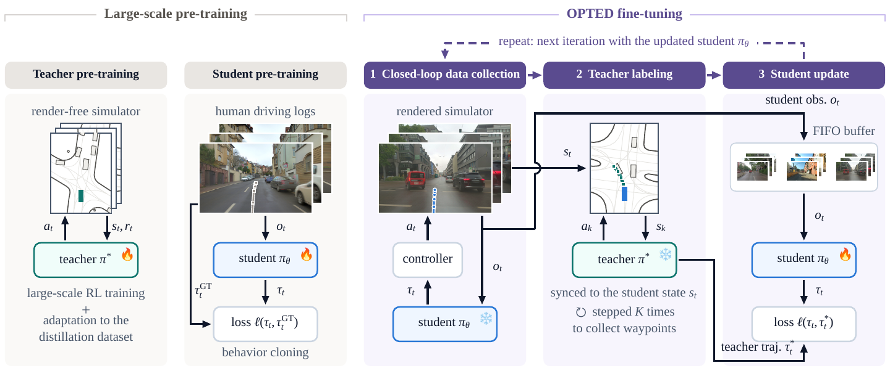

OPTED: On-Policy Fine-Tuning for End-to-End Driving using a Render-Free Teacher
*Work done in part while at NVIDIA Research

Abstract
As scaling pre-training data alone yields diminishing returns, post-training is becoming increasingly important across physical AI domains such as autonomous driving. End-to-end driving policies are pre-trained in open loop with behavior cloning on human demonstrations. However, compounding errors during closed-loop deployment can take the vehicle outside the training data distribution, increasing the risk of safety-critical incidents. Closed-loop post-training can mitigate this risk but requires costly simulation for sensor-based policies. We propose OPTED (on-policy fine-tuning for end-to-end driving) which decouples reinforcement learning from the post-training of the end-to-end policy: a privileged teacher is trained using RL on vectorized inputs (HD-map and bounding boxes). This teacher then provides supervision to the pre-trained student during closed-loop post-training. We apply OPTED to two camera-based models, TransFuser and VaVAM, and fine-tune them in AlpaSim, using neural reconstructions (3DGS) of real driving logs. Driving scores increase by factors of 1.6× and 9.5×, respectively. In controlled experiments OPTED matches closed-loop performance with approximately three orders of magnitude fewer simulator interactions than direct RL post-training, while staying closer to the human prior.
Method

Results
On the 441 held-out NuRec scenes in AlpaSim, OPTED raises the scene score of LTFv6 from 26.5 to 41.8 and of VaVAM from 3.9 to 37.1, outperforming open-loop BC fine-tuning and closed-loop supervised fine-tuning with log-anchored targets at equal training budget. Both improvements transfer to the private AlpaSim challenge leaderboard. In a controlled study with vectorized students on WOMD, OPTED reaches 95% of the teacher's scene score in about 6.8k closed-loop episodes, against 6.2M for RL fine-tuning of the same student, while staying closer to the human jerk distribution.
Code
Code will be released at github.com/01Dami23/opted.
Citation
@article{dacol2026opted,
title = {{OPTED}: On-Policy Fine-Tuning for End-to-End Driving using a Render-Free Teacher},
author = {Da Col, Damiano and Igl, Maximilian and Karkus, Peter and Chitta, Kashyap and Ivanovic, Boris and Pavone, Marco and Schindler, Konrad and Sakaridis, Christos},
journal = {arXiv preprint arXiv:XXXX.XXXXX},
year = {2026}
}